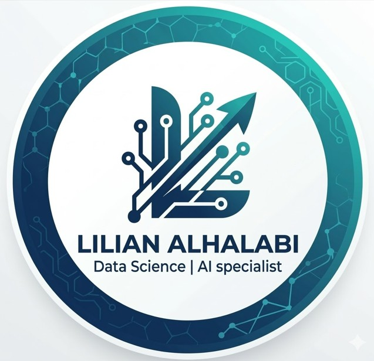
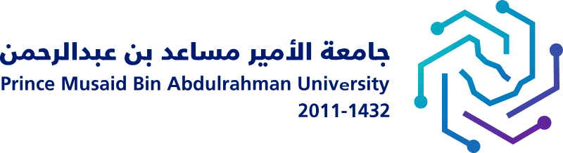

Lilian Mohammad
Alhalabi
Data Science graduate (First Class Honours, Artificial Intelligence Track) from Prince Musaed bin Abdulrahman University (formerly Saudi Electronic University), with hands-on experience in machine learning, NLP, and data engineering. Focused on building practical AI and data-driven solutions — particularly in NLP and applied AI.

Education & About Me
Academic foundation and hands-on training behind the projects below.

Prince Musaed bin Abdulrahman University
Specialized in AI and machine learning, focusing on turning complex data into actionable insights.
Apple Developer Academy
Focused on creativity, problem-solving, and mobile app development using Swift, collaborating within a team to design and build a functional mobile application.
Experience
Hands-on data engineering training applying academic knowledge to real pipelines.
Data Engineer Trainee
IT-Ranks Technology, Riyadh, Saudi Arabia
- Wrote Python and SQL scripts for data engineering tasks — querying, manipulating, and validating data across multiple databases — and built a custom data generator to produce sample datasets for pipeline testing.
- Created and tested a Debezium connector in a local environment, observing change-data-capture events flow through Apache Kafka.
- Queried and joined data across multiple sources using Trino at a basic level, and worked hands-on with Docker in local environments, troubleshooting container, configuration, and runtime issues.
- Independently studied Apache Airflow fundamentals, explored existing DAGs, and presented key workflow concepts to the data team; gained introductory exposure to Apache Iceberg, dbt, and ClickHouse.
Technical Skills
Core programming and data science skills, plus data engineering and BI tools from hands-on training.
Programming
Data Science & AI
Data Engineering
Databases
Visualization & BI
Web Development
Development Tools
Soft Skills
Languages
Arabic
Native Speaker
English
Fluent / Professional
Projects
From the graduation capstone to hands-on machine learning and full-stack builds.
Arabic E-Commerce Reviews Sentiment Analysis
Led a student team to build an Arabic-language sentiment analysis engine for e-commerce customer reviews, covering roughly 40,046 reviews. Preprocessed and classified Arabic review text using NLP techniques and the MARBERT language model, comparing approaches across TensorFlow, PyTorch, and Scikit-learn, and demonstrated the result through a Streamlit interface built with Google Colab and a Cloudflare Tunnel. Received strong feedback from the evaluation committee and an A+ grade, and has been selected for presentation at the Geneva graduation-projects exhibition in 2027.
Analytics Solution (Training Project)
- Built a containerized analytics solution: generated and validated sample data via SQL, then used Docker and Cube.js as a semantic layer over a relational database.
- Built dashboards in Apache Superset and Metabase on top of Cube.js, defining metrics and dimensions and validating consistency with source data.
Completed during the IT-Ranks Data Engineer Trainee program — business details withheld.
Student Performance Analysis
- Predicted outcomes using student datasets.
- Conducted cleaning, engineering and analysis.
Heart Disease Prediction
- Built and evaluated classification models to predict heart disease risk from clinical data.
- Performed preprocessing, feature selection, and algorithm comparison.
Email Network Analysis
- Analyzed email networks to identify key connectors.
- Extracted insights about communication patterns.
Emotion Recognition (FER-2013)
- Image preprocessing and organization with Python.
- Interactive Power BI dashboard for visualization.
Elegant Gems E-Commerce
- Luxury jewelry platform built with PHP & MySQL.
- Dynamic database-driven product catalog.
Certifications & Training
Click any card to view the credential.
﴾ وَقُل رَّبِّ زِدْنِي عِلْمًا ﴿
سورة طه — الآية 114
"My Lord, increase me in knowledge."
Let's Connect
Open to discussing Data Science, AI, and Machine Learning opportunities.
Email: liliyanalhalabi@gmail.com
Download My CV